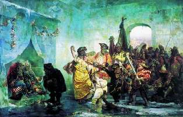

Борис Акунин
Мой календарь
Очень обидно выглядеть в глазах окружающих смешным. Правильная реакция на это - все равно стать успешным и счастливым назло дуракам. Сегодня отличный день, чтобы лишний раз напомнить себе эту истину.
17 февраля 1740 года состоялась знаменитая свадьба в Ледяном Доме, произведшая большое впечатление на современников и впоследствии изображенная во многих произведениях.
Скучающая императрица Анна, баба злая и вздорная, устроила себе развлечение: женила двух придворных шутов, Михаила Голицына по прозвищу «Квасник» и «уродку» Авдотью Буженинову. Для праздника на Неве построили дворец изо льда, устроили гулянку со всякими похабствами. «Жених с невестою сидел в сделанной нарочно клетке, поставленной на слоне, а прочий свадебной поезд… следовал на оленях, на собаках, на свиньях». Заставили «молодых» провести свадебную ночь в ледовой спальне. В общем, ужасно повеселились.
Михаил Голицын при этом был княжеского рода. Гнев самодурки Анны он вызвал тем, что нарушил «скрепу» - перешел в католичество. С тогдашней официальной точки зрения совершить такой поступок мог только «дурак», то есть шут. Вот гвардии майора и определили в клоуны.
Пиит Тредиаковский сочинил в честь «дурака и дурки» глумливую оду:
И как в воду смотрел. Поэты - они такие.
Брак, над которым надрывали животики петербургские дураки, оказался вполне счастливым. Супруги жили «в благостыне» и произвели на свет сына.